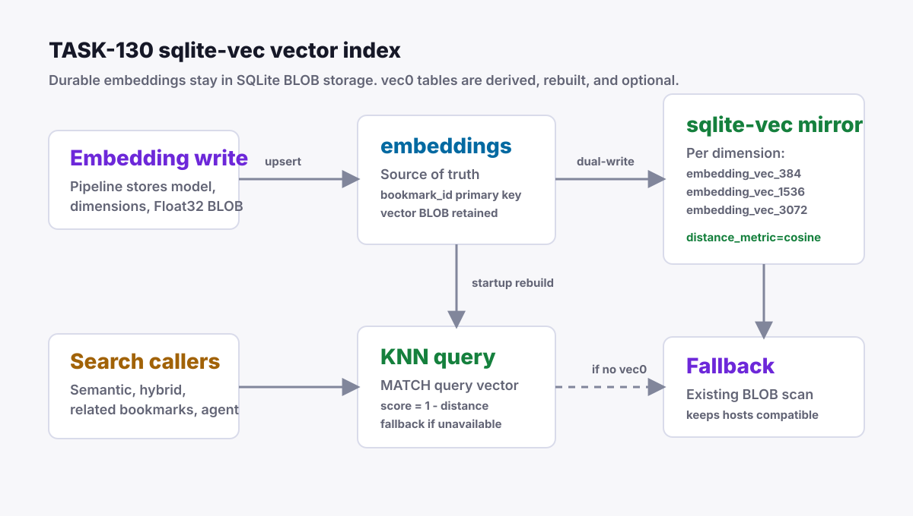

Grimoire Task Report
sqlite-vec Vector Index Runtime

Before
Embeddings were persisted as SQLite BLOB values and semantic behavior scanned those rows in process. The organization agent duplicate pass also used the same scan path and capped candidates at 2,000 embeddings.
Problem
Vector-heavy flows scaled linearly with the embedding table and could not benefit from sqlite-vec even though the dependency was already present. The integration also needed to stay compatible with Bun builds that cannot load SQLite extensions.
Changes Added
- Added an optional sqlite-vec loader with custom SQLite library probing and an explicit disable switch.
- Added per-dimension derived
vec0tables namedembedding_vec_<dimensions>, rebuilt at database bootstrap and dual-written from embedding upserts. - Centralized nearest-neighbor lookup in
EmbeddingRepository.findNearestwith sqlite-vec first and BLOB scan fallback. - Moved semantic search, hybrid search, related bookmarks, and duplicate detection to the shared nearest-neighbor path.
- Disabled the derived mirror per database handle when vector writes or queries fail, keeping embedding persistence on the durable BLOB path.
- Added daemon regression tests for dual-write behavior, sqlite-vec ranking, active-only vector results, mirror-write fallback, semantic search mirror usage, and duplicate detection beyond the old 2,000-row cap.
- Added a deterministic 768-dimensional BLOB-vs-sqlite-vec benchmark matrix to
npm run test:performance.
Result
Hosts with extension-capable SQLite can query the derived vector mirror for cosine nearest-neighbor ranking. Hosts without sqlite-vec, or with a broken derived mirror, keep the existing BLOB scan behavior, so local-first storage and normal app startup remain conservative.
Benchmark Result
On June 9, 2026 with Homebrew SQLite and sqlite-vec v0.1.7-alpha.2, the 768-dimensional nearest-neighbor benchmark measured sqlite-vec at 2.1x faster for 1K embeddings, 2.1x faster for 5K, and 2.0x faster for 10K.
Verification
bun test daemon/src/test/embedding-repository.test.ts daemon/src/test/search-repository.test.ts daemon/src/test/organization-agent.test.tscd daemon && bun run checknpm run test:daemonnpm run lintnpm run type-checknpm run test:performanceincluding the 100/1K/5K/10K vector benchmark matrix
Implementation Notes
embeddings.vector remains the source of truth. The sqlite-vec tables are intentionally derived so startup can recreate them, tests can use in-memory databases, and hosts without extension loading stay functional. Bun 1.3.6 on macOS does not load sqlite-vec through the bundled SQLite path, so the loader probes Homebrew/custom SQLite locations and falls back cleanly when unavailable. Post-load vector-table errors also disable sqlite-vec for that database handle instead of blocking embedding writes.
Files Changed
daemon/src/db/sqlite-vec.tsdaemon/src/db/embedding-repository.tsdaemon/src/db/search-repository.tsdaemon/src/db/database.tsdaemon/src/test/helpers/db.tsdaemon/src/ai/organization-agent.tsdaemon/src/test/embedding-repository.test.tsdaemon/src/test/search-repository.test.tsdaemon/src/test/organization-agent.test.tsdaemon/src/test/performance/large-library-fixtures.tsdaemon/src/test/performance/large-library-performance.tsdocs/performance.mdtasks/done/TASK-130-sqlite-vec-vector-index.md
Follow-Ups
Future diagnostics can expose whether sqlite-vec is active on a specific host, but TASK-130 now keeps sqlite-vec optional and preserves the durable BLOB fallback in normal runtime paths.